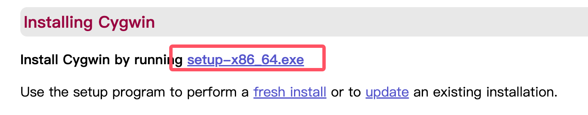
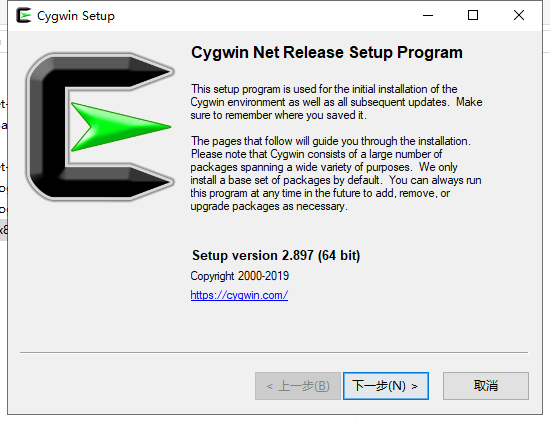
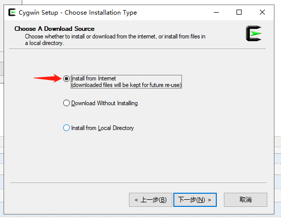
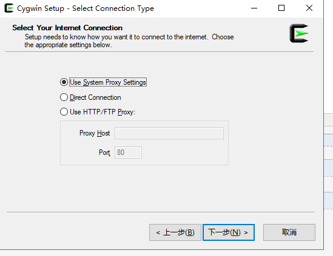
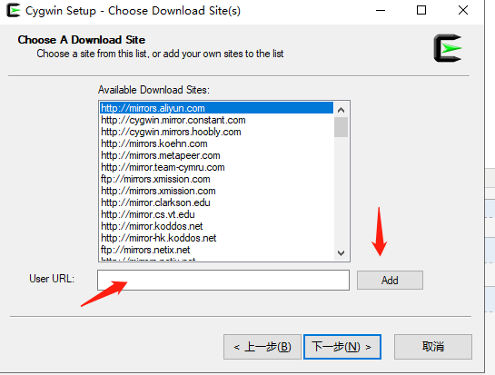
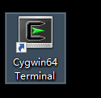
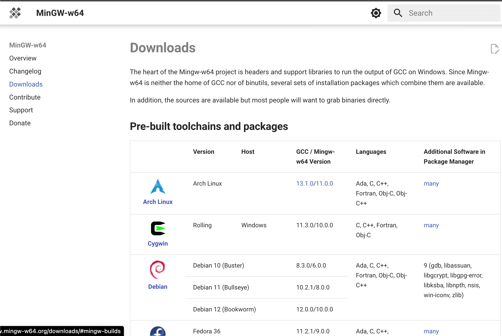
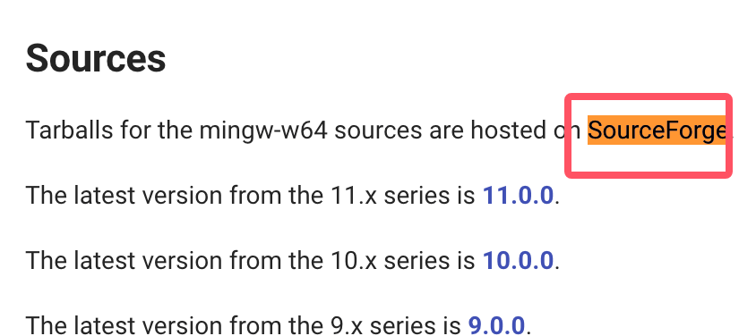
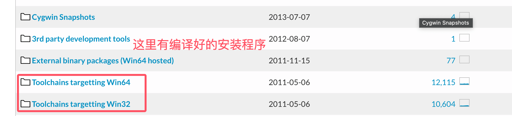
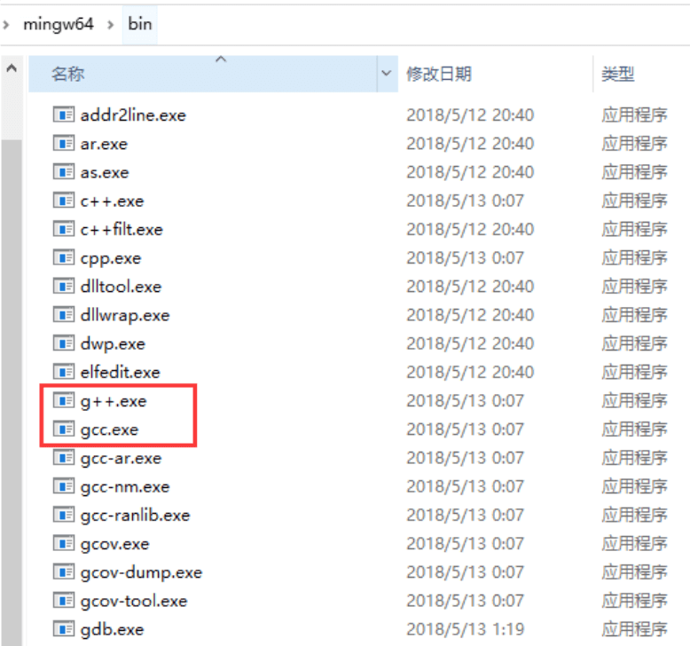

C 环境设置
如果您想要设置 C 语言环境，您需要确保电脑上有以下两款可用的软件，文本编辑器和 C 编译器。
文本编辑器
通过编辑器创建的文件通常称为源文件，源文件包含程序源代码。
C 程序的源文件通常使用扩展名.c。
在开始编程之前，请确保您有一个文本编辑器，且有足够的经验来编写一个计算机程序，然后把它保存在一个文件中，编译并执行它。
Visual Studio Code：虽然它是一个通用的文本编辑器，但它有很多插件支持 C/C++ 开发，使其成为一个流行的选择，通过安装 C/C++ 插件和调整设置，你可以使其成为一个很好的 C 语言开发环境。
Sublime Text：Sublime Text 是一个轻量级、快速和高度可定制的文本编辑器，有很多插件支持 C 语言的开发。它具有强大的代码编辑功能和快捷键，使得编码更加高效。
Atom：Atom 是一个开源的文本编辑器，由 GitHub 开发，它有很多插件和主题，可以定制为一个适合 C 语言开发的环境。
Vim 和 Emacs：这两个是传统的文本编辑器，它们有着强大的编辑功能和高度的可定制性，对于熟练的用户来说非常强大，有很多插件和配置可以支持C语言的开发。
Eclipse：Eclipse 是另一个功能强大的集成开发环境，虽然它最初是为 Java 开发设计的，但通过安装 C/C++ 插件，可以使其支持 C 语言开发。
C 编译器
写在源文件中的源代码是人类可读的源。它需要"编译"，转为机器语言，这样 CPU 可以按给定指令执行程序。
C 语言编译器用于把源代码编译成最终的可执行程序。这里假设您已经对编程语言编译器有基本的了解了。
最常用的免费可用的编译器是 GNU 的 C/C++ 编译器，如果您使用的是 HP 或 Solaris，则可以使用各自操作系统上的编译器。
以下部分将指导您如何在不同的操作系统上安装 GNU 的 C/C++ 编译器。这里同时提到 C/C++，主要是因为 GNU 的 gcc 编译器适合于 C 和 C++ 编程语言。
UNIX/Linux 上的安装
如果您使用的是Linux 或 UNIX，请在命令行使用下面的命令来检查您的系统上是否安装了 GCC：
$ gcc -v
如果您的计算机上已经安装了 GNU 编译器，则会显示如下消息：
Using built-in specs. Target: i386-redhat-linux Configured with: ../configure --prefix=/usr ....... Thread model: posix gcc version 4.1.2 20080704 (Red Hat 4.1.2-46)
如果未安装 GCC，那么请按照http://gcc.gnu.org/install/上的详细说明安装 GCC。
本教程是基于 Linux 编写的，所有给定的实例都已在 Cent OS Linux 系统上编译过。
Mac OS 上的安装
如果您使用的是 Mac OS X，最快捷的获取 GCC 的方法是从苹果的网站上下载 Xcode 开发环境，并按照安装说明进行安装。一旦安装上 Xcode，您就能使用 GNU 编译器。
Xcode 目前可从developer.apple.com/technologies/tools/上下载。
Windows 上的安装
Cygwin
Cygwin 是一个在 Windows 操作系统上模拟 Unix/Linux 环境的软件包，它允许用户在 Windows 上使用类 Unix 工具和应用程序。
Cygwin 通过提供一组 DLL（动态链接库），这些 DLL 充当 Unix 系统调用层和 Windows 内核之间的桥梁，使得 Unix 程序能够在 Windows 系统上运行。
Cygwin 官网：https://www.cygwin.com/。
在官网下载安装包：

下载完成后，双击下载的文件：

接下来可以一直点击下一步(Next):


这里我们可以添加网易开源镜像阿里云镜像https://mirrors.aliyun.com/cygwin/：

安装完成后，就会在桌面生成一个图标：

双击图标，进入命令行界面，输入cygcheck -c cygwin命令可以查看当前的 cygwin 的版本信息：

接下来我们安装 gcc/g++ 的编译环境，在命令行进入 setup-x86_64.exe 目录下，执行：
setup-x86_64.exe -q -P wget -P gcc-g++ -P make -P diffutils -P libmpfr-devel -P libgmp-devel -P libmpc-devel
安装完成后，进入 Cygwin64 终端， 输入gcc --version命令就可以查看版本信息了。
MinGW-w64
为了在 Windows 上安装 GCC，您需要安装 MinGW-w64。
MinGW-w64 是一个开源项目，它为 Windows 系统提供了一个完整的 GCC 工具链，支持编译生成 32 位和 64 位的 Windows 应用程序。
访问 MinGW-w64 的主页mingw-w64.org，进入 MinGW 下载页面https://www.mingw-w64.org/downloads/，下载最新版本的 MinGW-w64 安装程序。
MinGW-w64 的下载详情页面包含了很多 MinGW-w64 及特定工具的整合包：

我们只安装 MinGW-w64 ，所以只需下载 MinGW-w64 即可，点击红框中的"SourceForge"超链接，就会进入 SourceForge 中的 MinGW-w64 下载页面。
在 SourceForge 上下载 MinGW-w64 ：https://sourceforge.net/projects/mingw-w64/files/
Github 上也有编译好的二进制包：https://github.com/niXman/mingw-builds-binaries/releases

可以下载指定系统的安装程序：
- 32 位系统：installer.exe
- 64 位系统：installer.exe

这种安装，会碰到网络连接错误问题，所以我们可以直接下载 sjlj （稳定的，64 位和 32 位都支持）：
<p>页面往下滑，下载安装程序：</p> <p><img decoding="async" style="width:70%" src="../wp-content/uploads/2014/09/7b544fedd185c3b84692c9e7aaf12cf2.png"></p><p> 这种安装，会碰到网络连接错误问题，所以我们可以直接下载 sjlj （稳定的，64 位和 32 位都支持）：</p> <p><img decoding="async" style="width:70%" src="../wp-content/uploads/2014/09/7b544fedd185c3b84692c9e7aaf12cf2.png"></p>下载完成后，解压，在 bin 目录里面就可以找到 g++.exe 或者 gcc.exe：

当安装 MinGW 时，您至少要安装 gcc-core、gcc-g++、binutils 和 MinGW runtime，但是一般情况下都会安装更多其他的项。
添加您安装的 MinGW 的 bin 子目录到您的PATH环境变量中，这样您就可以在命令行中通过简单的名称来指定这些工具。

当完成安装时，您可以从 Windows 命令行上运行 gcc、g++、ar、ranlib、dlltool 和其他一些 GNU 工具。
其他扩展
Suck My Gun
307***101@qq.com
参考地址
Windows 环境下使用 GCC
MinGw 是 Minimal GNU on Windows 的缩写，允许在 GNU/Linux 和 Windows 平台生成本地的 Windows 程序而不需要第三方运行时库。本文主要介绍 MinGw 的安装和使用。
(一)安装
如果想安装 g++,gdb,只要输入命令mingw-get install g++ 和 mingw-get install gdb
(二)使用
在 cmd 的当前工作目录写 C 程序 test.c：
# include <stdio.h> int main() { printf("%s\n","hello world"); return 0; }在 cmd 中输入命令gcc test.c
在当前目录下会生成 a.exe 的可执行文件，在 cmd 中输入 a.exe 就可以执行程序了。
如果想调试程序，可以输入 gdb a.exe
进入 gdb 的功能，使用 gdb 常用的命令就可以调试程序了。
Suck My Gun
307***101@qq.com
参考地址
末烽丶訪
101***7220@qq.com
Windows 环境变量的设置：
（1）将刚刚下载好的文件，解压到C盘根目录下，文件夹名称 MinGw；
（2）计算机——>(右键)属性——>高级系统设置——>环境变量——>系统变量，选中Path点击编辑，将MicGw文件下的bin目录路径复制出来，我这里是
C:\MinGW\bin，将路径复制到 Path 中，点击确定；注意点目录前后的分号，一定要有并且必须是英文半角。
（3）同上，新建一个系统变量 lib，对应 MicGw 下的lib 文件夹；新建一个系统变量 include，对应 MicGw 下的 include 文件夹；
到此为止，我们就算是搭建好C语言开发的基本环境了；
末烽丶訪
101***7220@qq.com
终究被人遗忘
221***0052@qq.com
安卓使用gcc
c4droid是款Android设备上的C/C++程序编译器，默认以tcc(tiny c compiler)为编译器，可以选择安装gcc插件,选用gcc后，可以用sdl（简单直控媒体层库，需安装sdl plugin for c4droid）和qt（nokia官方开发库,需安装sdl plugin for c4droid）。也可以开发native android app（需安装sdl plugin for c4droid），就像google ndk一样。软件支持代码高亮，编译时间随cpu主频而定，主频越高编译越快。gcc插件版本5.00提供了示列程序，包含sdl，android native，qt和命令行测试程序等源码。
百度云链接：C4droid5.96汉化
https://pan.baidu.com/s/1kVn5x2Z
首先查看自己的手机类型
下载对应的软件
下载后
终究被人遗忘
221***0052@qq.com
电磁泡ShellV
i@l***x.dog
参考地址
安卓下安装GCC
Termux 下安装gcc。
termux是 可以在Android操作系统中模拟Linux环境的终端应用程序，可以直接安装在无root权限的安卓环境下。自动地安装了一个最小的基本系统——可以使用类似Debian系统阵营中的APT包管理器提供额外的软件包。
在Termux下可以直接安装 gcc 、Vim、nano、Python、w3m 甚至是 php + composer
在Termux中可以开启SSHD使用ssh客户端远程连接（包括在安卓本地使用类似ConnectBOT管理工具连接），可以做到和在类Unix系统中同样的使用gcc进行c语言文件的编译。
Termux官网 ：https://termux.com/
电磁泡ShellV
i@l***x.dog
参考地址
CoolLoser
103***3350@qq.com
gcc 进行 c 语言编译分为四个步骤：
1.预处理，生成预编译文件（.i 文件）：
2.编译，生成汇编代码（.s 文件）：
3.汇编，生成目标文件（.o 文件）：
4.链接，生成可执行文件：
有时候，进行调试，可能会用到某个步骤哦
CoolLoser
103***3350@qq.com
erili sun
151***1014@qq.com
Win10下使用 vscode 编译 c 语言，安装好 MinGW 后，在里面找到 mingw32-gcc.bin, mingw32-gcc-g++.bin, 以及 mingw32-gdb.bin 第一个是 c 语言文件的编译器，第二个是 c++ 的，第三个是用来调试编译后文件的。然后设置好环境变量，编写好 .c 文件，在 vscode 中打开 .c 文件所在的文件夹（注意是文件夹），然后配置 launch.json 文件如下所示：
{ "version": "0.2.0", "configurations": [ { "name": "(gdb) Launch", "type": "cppdbg", "request": "launch", "program": "${workspaceRoot}/${fileBasenameNoExtension}.exe", "args": [], "stopAtEntry": false, "cwd": "${workspaceRoot}", "environment": [], "externalConsole": true, "MIMode": "gdb", "miDebuggerPath": "E:\\MinGW\\bin\\gdb.exe", "preLaunchTask": "gcc",//tasks.json里面的名字 "setupCommands": [ { "description": "Enable pretty-printing for gdb", "text": "-enable-pretty-printing", "ignoreFailures": true } ] } ] }tasks.json文件如下所示：
{ "version": "2.0.0", "tasks": [ { "label": "gcc", "type": "shell", "command": "gcc", "args": [ "-g", "${file}","-o","${fileBasenameNoExtension}.exe" ], "group":{ "kind": "build", "isDefault": true } } ] }erili sun
151***1014@qq.com
默默的输出
987***122@qq.com
本人小白一名，在网上搜了好多Win10下C/C++编程环境创建的方法，发现全都是过时的，自己折腾了好久终于搞定，特地分享一下：
Win10下使用eclipse创建C/C++编程环境的方法（64位系统）：
默默的输出
987***122@qq.com